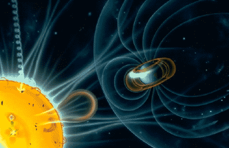
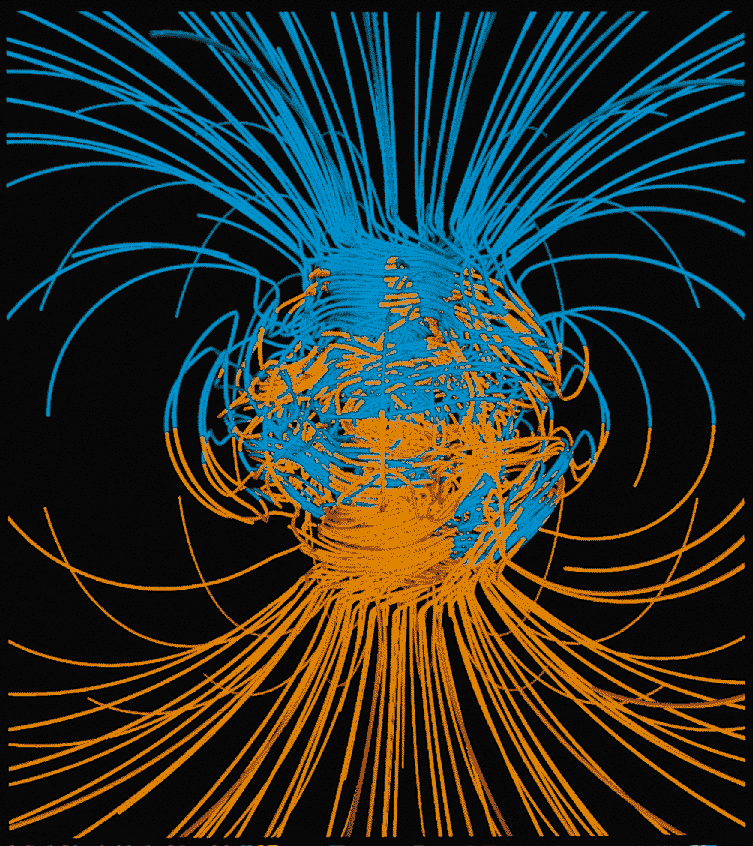

Not good: the magnetic field of the Earth is fading -- and fast. It seems to be preparing to flip over. Suddenly, our compasses would point southwards. But will there still be someone around to notice it?
They say it gives you cancer. That it makes the use of electricity impossible, throwing us back into the Middle Ages. It should turn the atmosphere into a deadly brew of toxic gases. That’s how it goes, when suddenly, the Earth’s magnetic field stops -- and flips over.
In case you didn’t know -- the Earth is in fact a giant magnet. Around it, there’s this huge magnetic field, invisible to the eye. It's a force field, really. It protects us against dangerous, incoming radiation from the sun and from deep space. If you’re an incoming space particle, the field will drag you away, and drop you somewhere on the south pole or the north pole. You can see this as it is happening: the rain of space particles is what we call the Aurora Borealis, the northern light.
But every now and then, the magnetic field fades, and flips over. North becomes south, and south becomes north. Such magnetic flip-overs are probably just as common as Ice Ages. On average, they occur once every 250,000. But the last time it happened, it was 780,000 years ago -- so you could say it’s time for the planet to flip again.
|  |
|
|
And hold your horses, our world might be doing just that. For at least three centuries, the Earth’s magnetic field has been fading, in an ever faster pace. Right now, it is about 10 percent weaker than it was when scientists started keeping track of it in 1845. Also, there’s the poetically named ‘South Atlantic Anomaly’. That’s a huge chunk of Earth, deep underneath the ocean floor, where the turnover has already begun.
Gladly, the pole shift doesn’t mean the world is about to ‘fall over’ or something, as many people fear. The ice caps won’t suddenly move to Africa. During flip-over, only the magnetic poles change position. You will have to change the name ‘north pole’ into ‘south pole’ and get used to the fact that compass needles point southwards from now on. That’s basically it.
This will have all
kind of bizarre effects. Birds and other migrating animals will lose their
way. Ships, airplanes and travelers relying on
compasses will get lost, too.
Meanwhile, the night sky is filled with ghostly
streaks of colored light -- that Aurora Borealis again, but this time in
your backyard. There will be power cuts, as the Earth is hit
by solar radiation. Watching TV, listening to the radio or talking over the
telephone will become difficult, and sometimes impossible. Communication lines will
be downed; satellites will be zapped. There could even be spontaneous
outbreaks of fires -- this is what happened during an extreme solar radiation
storm in 1859. And back then, the magnetic field was on!
Meanwhile, your body is zapped, too. The invisibly small space particles shoot through your body, ripping through your DNA. This can give you cancer, or horribly mutated offspring. For several thousands of years, it will be like living next to the crashed nuclear plant of Chernobyl. Well, with the exception that in Chernobyl, you could at least use the telephone!
So gradually,
humanity will be reduced to a monstrous, sick, cancerous and demented bunch,
right? Well --
perhaps not.
Indeed, all unpleasant effects outlined above are real. But
science agrees that they won’t be that severe. The magnetic flip won’t wipe
out our civilization, as many doom sayers suggest. Fact is, we can do
without our magnetic blanket for a while.
|  |
Take a look at the cancers. It is estimated that without magnetic field, we would have 15 extra cases of cancer in every 1 million people a year. That is of course awful -- but hardly catastrophic. Each year, more people die of the common flu!
Without magnetic field, Earth is still protected by its thick atmosphere. If you’re that evil particle from outer space again, you will have to zig zag your way through a thick soup of oxygen, nitrogen and other gases first, before you can finally shoot a human being. Chances are that long before, you will have bumped into an atmospheric gas molecule.
In fact, there are two places where the magnetic field is almost zero already: the north and the south pole. There, the field dumps the space particles it has caught -- right on the heads of the Inuit (Eskimos) and polar explorers. But despite all that, the Inuit and the explorers are doing fine. Even their electricity works.
And if that doesn’t calm you down, consider this. You and I won’t live to witness the next swap. It should take at least a few more centuries, before the poles come marching in.
That being said -- one nightmarish fact remains. In the long run, the magnetic field could indeed kill us all. In a few billions of years, chances are the field shuts down for good because the Earth’s core freezes... But that’s another story!
 |
 |